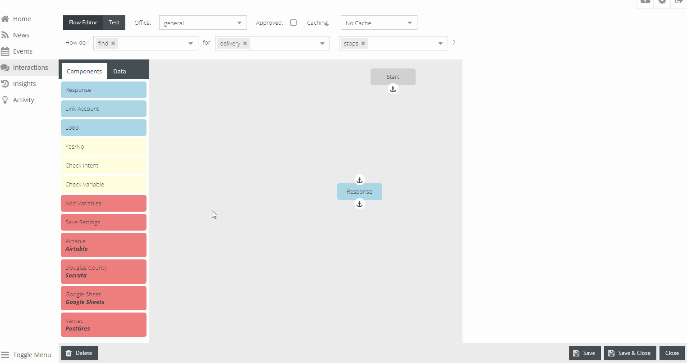

Interaction Examples¶
Name the connectors to be unique and specific to what they are used for. Multiple connectors may be created of the same type.


Airtable¶

The API Key is located in the Airtable User Account. Click on the User Image in the top right, and click on Account. API Key is located in the Overview section under API. For first time, click Generate API key or use the personal API key that’s been generated. The API Key and Airtable API link to get the Base ID is highlighted in the image below.
To get the Base ID, press the Airtable API above where the API Key is found. Once pressed, a new tab will open. The Airtable API for “TABLE NAME” will be displayed at the top. To change which table or data-set, press the down arrow. To find the Base ID, scroll down on the right side. The Base ID is highlighted in the “Example Using Bearer Token Example”.
Once the Airtable Connector has been created, navigate to interactions to begin creating new interactions using the new connector.
- Drag and Drop the Airtable connector into the flow diagram area
- Connect the Start component to Airtable, and Airtable to Response
- Table is the name of the table tab in the airtable table
- Fields are the columns. To add fields, type the name of the column and hit the Comma Key on the keyboard. This will create a boxed item with the name and an ‘x’ to be able to remove it from the list. Add as many fields as may be useful for this interaction response.
- Add Category
- Add brand_description
- View should be the Grid view.
- Filter on a particular value. Ex.) Category = “BRANDY” should return all records with category matching “BRANDY” and the records brand_description
In the Response description, type:
{{connectors.c1.first.brand_description}} {{connectors.c1.first.Category}}
Those were the two fields that were wanted to be returned. To test, in the top left corner press Test. On the right hand side, click the +. Name the name to represent what will be tested, ex.) Category and Brand Description. In the Config textarea, type {}. Save. To test, press the lightning bolt to the left of the name of the test. The test will run and then display what was written within the handlebars, found above.
ArcGIS Online¶
Google Sheets Connector¶
GS Query Help The spreadsheet ID is highlighted in the Google Sheet URL. The value is followed by the spreadsheets/d/{spreadsheet ID}/

The Google Sheet GID, which is used within the interaction is the right number highlighted in the image above. It can be found by copying the number after the #gid=.
Example:
https://docs.google.com/spreadsheets/d/1huv8Qq7JfxNBVNdRUpA4QY49HXcRWZYwIE4TIHXnQjg/edit#gid=1605080141
## The spreadsheet ID is 1huv8Qq7JfxNBVNdRUpA4QY49HXcRWZYwIE4TIHXnQjg
## The GID is 1605080141
The GID will change when switching between table tabs which are located at the bottom left. To see, find the gid in the url, and see them change when switching between two or three different tables.
Navigate to the interactions. Drag and drop the Google Sheet Connector that was just created. There will be a connector title, if this is the second connector within an interaction, it may be called c2 already. There is a Google Grid ID text field, this is where to copy and paste the GID that was found from the URL above.
For the query, type out:
Select C, D, E where E = "BRANDY"
Lambda¶
OpenDataSoft¶
PostGres¶
REST API¶
Salesforce¶
Socrata Connector¶
Create a Socrata Connector
Username and password are not required.
- To get the dataset
- Go to Socrata dataset
- Click on API from the group of buttons at the top right
- Copy the 4x4 letter set within the API Endpoint URL ex.) abcd-efgh
- In the query, choose which fields, or columns, are needed to answer the user’s question.
The query is a basic select statement. Select what columns will be required to answer the user’s questions.
To use user input or settings:
SELECT * WHERE Account_Number = "{{settings.account_number}}"